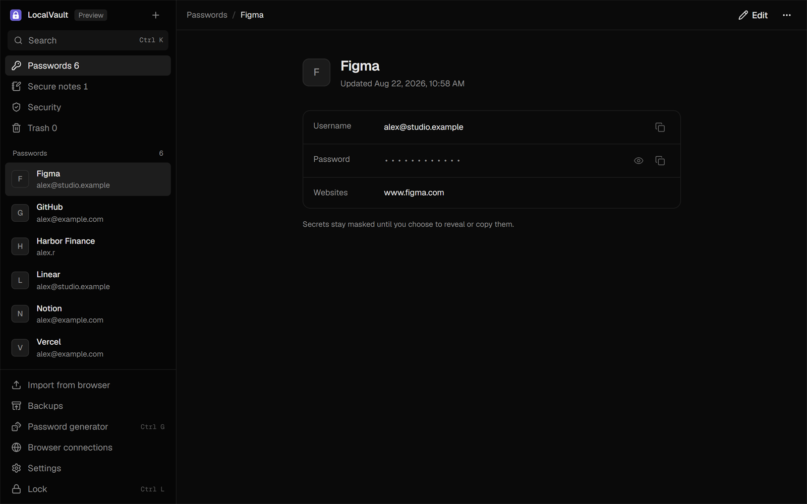
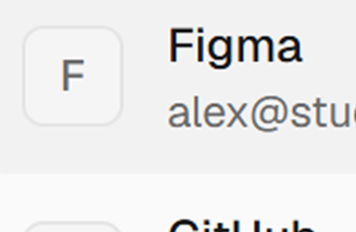
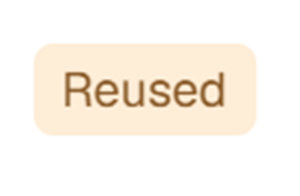
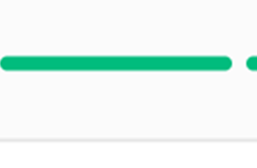
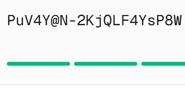
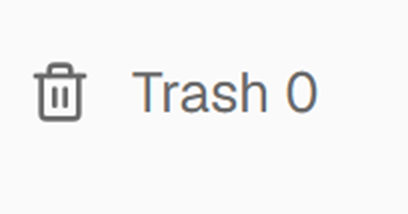
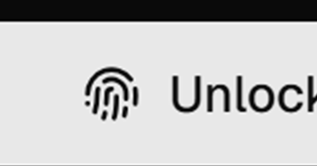
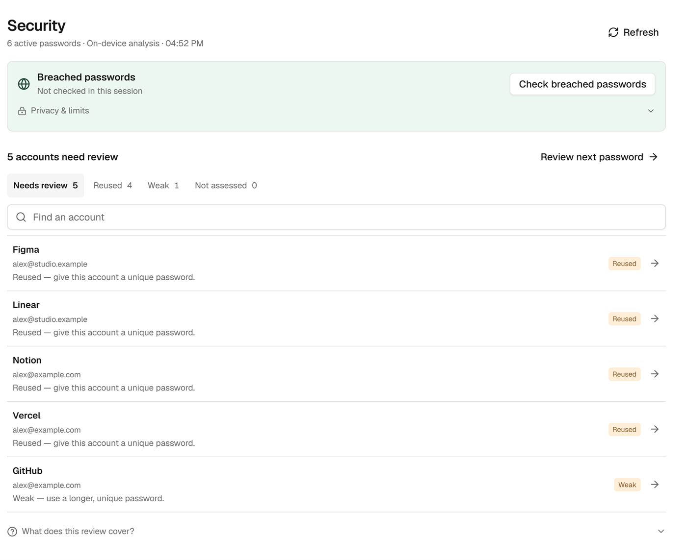
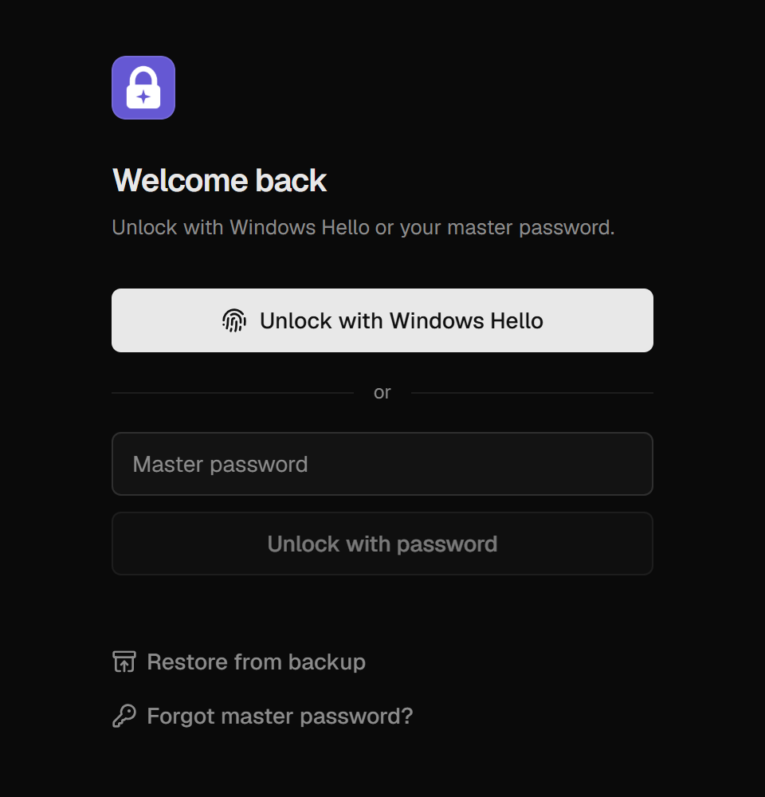
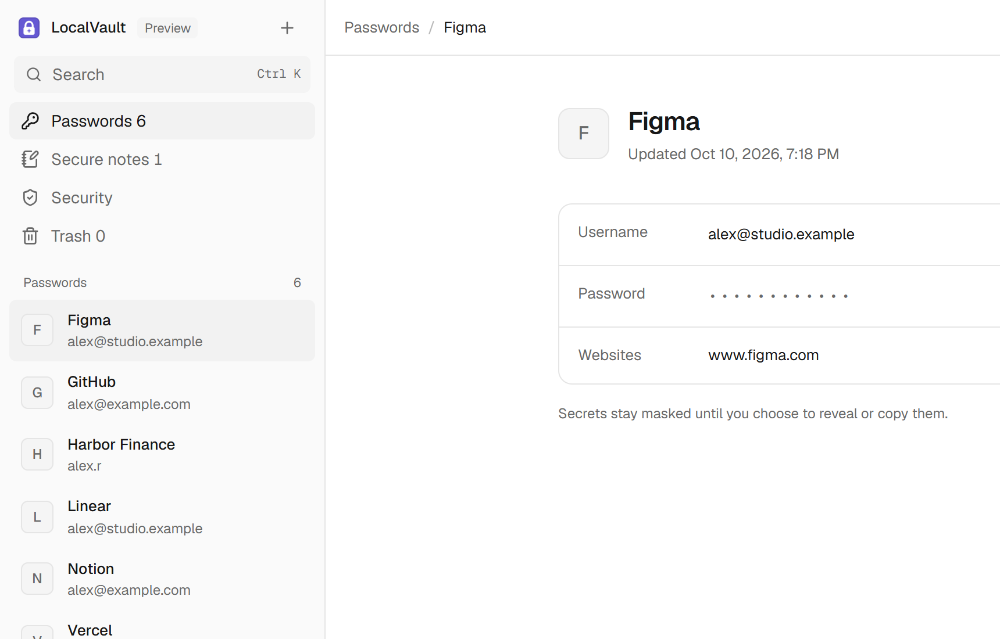

Your passwords,on your PC.
LocalVault keeps every login in one encrypted file on your Windows PC and fills it into Chrome, Edge and Firefox.
Free · Windows 11 x64 · 69 MB · version 0.2.1 preview

tidewater.example
Sign in to Tidewater
https://tidewater.example
Choose an account to fill · never auto-submitted
Pick an account to fill, or click the field to reopen.
Every login   
Five characters leave.
A breach check sends Have I Been Pwned the first five characters of your password’s SHA-1 hash, and only when you start one. Try it: this page works out the hash itself and sends nothing.
5BAA61E4C9B93F3F0682250B6CF8331B7EE68FD8
Sent, with your IP addressStays on your PC
What’s inside
Make a strong password   

The Security view finds reused and weak passwords on your PC, without going online. It locks itself after five minutes idle, and again whenever Windows locks or sleeps.
Read the security designSet up in three steps
-
First, install it.
LocalVault-0.2.1-win-x64.msi 69 MB
It installs for your Windows account, without admin rights. Choose a master password of 12 characters or more.
-
Then pair your browser.
Keep the desktop app open and unlocked. Verify this code there:
482 913LocalVault
Pair browser profile ‘Firefox · Home’?
Confirm the extension displays code 482913.
Approve only if you just requested this connection.
-
Then sign in like always.
Email or username alex@example.com
Logins you fill, and new ones you save from the browser, all land in the same vault.
Fair questions
Where are my passwords stored?
In one file, %LOCALAPPDATA%\LocalVault\Data\vault.lvault, on your PC. Usernames, websites and notes are encrypted along with the passwords. Nothing is synced to a server, so make an encrypted backup and keep it on another device.
How is the vault encrypted?
Argon2id turns your master password into a key, using 256 MiB of memory and three passes. That key unlocks a random vault key, and XChaCha20-Poly1305 seals everything with it. The full file format is in the security design on GitHub.
What if I forget my master password?
Nobody can recover it, us included. You can restore an encrypted backup if you remember its password, or reset LocalVault and start a new, empty vault.
Does LocalVault ever go online?
Only for two things you control. A breach check sends five hash characters and your IP address to Have I Been Pwned, and asks first each time. Website icons, if switched on, come from the saved sites themselves. There is no telemetry.
Which browsers does it work with?
Chrome, Edge and Firefox on Windows 11. In this preview the extensions are loaded by hand from the install folder; store listings come later. Private windows are left alone.
Windows warns me about the installer. Is it safe?
The preview is not code-signed yet, so Windows SmartScreen asks before running it. Check that its SHA-256 matches the one published with the release: 8fbb2899cbe5fc463461c7b3c66cc3d61234182408d5acce706c066248161405.
Has it been audited?
Not yet. It has automated tests, but no independent security review. The README and security design list exactly what is and isn’t checked.
How do updates work?
Download a newer installer from GitHub and run it, or choose Settings, then Install update. Your vault, pairings and preferences stay put. LocalVault never downloads or installs anything on its own.